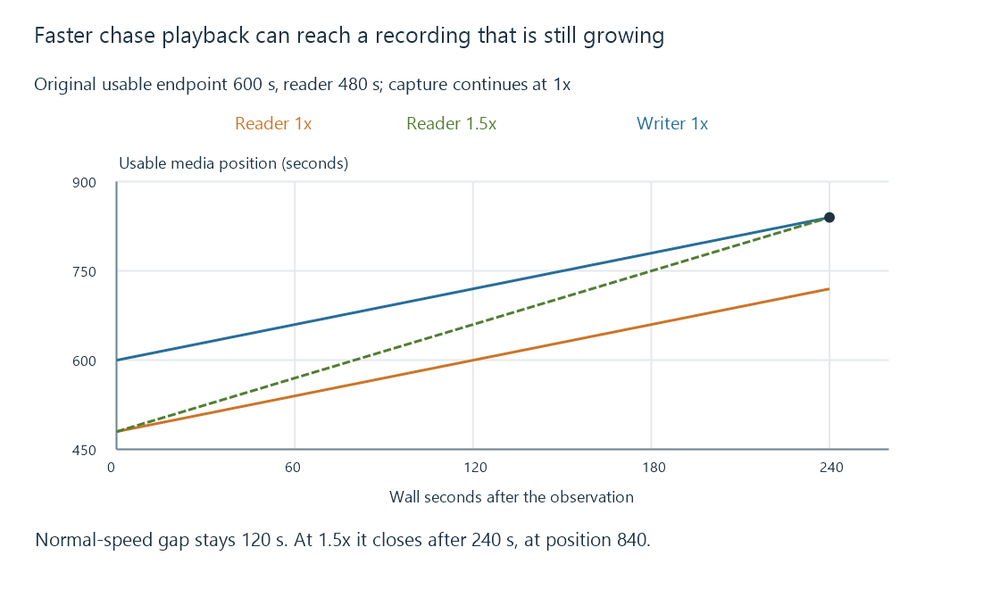

Chase playback while a recording grows
Chase playback reads an ongoing recording before capture finishes, coordinating a growing usable endpoint with the reader’s position and the recording’s final completion state.
A programme is still being recorded, but its beginning is already stored. Chase playback lets a viewer start that retained beginning while the recording continues to grow.
The reader is following a moving usable endpoint. That differs from playing a completed file whose endpoint is fixed.
The writer and viewer advance independently
Use an original recording that has 600 seconds of usable media when the viewer is at 480:
| Wall time from this observation | Usable recorded endpoint at 1× capture | Viewer at 1× playback |
|---|---|---|
| 0 s | 600 | 480 |
| 120 s | 720 | 600 |
| 240 s | 840 | 720 |
The gap remains 120 seconds. Normal-speed playback does not catch a writer advancing at the same speed.
If the viewer instead runs at 1.5×, the gap closes at 0.5 seconds per wall second. It reaches the moving endpoint after 240 seconds, at media position 840.

Seeking closer to the endpoint closes the gap immediately by skipping content. Faster playback retains more of that content while taking time to catch up.
Only usable written media belongs to the endpoint
Bytes at the physical end of a growing file may include an incomplete container unit or a picture lacking the entry-point information the reader needs.
The writer therefore needs to expose a usable extent, not merely a filename and current byte count. The chosen container/index and media route determine how a reader discovers new data and seeks within it.
A segmented representation can publish complete pieces as they become ready. This original HLS example contains three completed six-second segments:
#EXTM3U
#EXT-X-VERSION:3
#EXT-X-PLAYLIST-TYPE:EVENT
#EXT-X-TARGETDURATION:6
#EXT-X-MEDIA-SEQUENCE:0
#EXTINF:6,
recording-0.ts
#EXTINF:6,
recording-1.ts
#EXTINF:6,
recording-2.ts
It exposes eighteen seconds so far. Its EVENT type permits appending to the existing presentation, and the absence of ENDLIST means no final endpoint has been declared.
This playlist is a protocol teaching example, not a claim that every Emby ongoing-recording route uses this representation. Emby’s actual app, backend and media path establish the supported growing-recording behavior.
Reaching the current endpoint can mean waiting
For an original abstract state model:
[
{"reader": 18, "usableEnd": 18, "finalized": false, "result": "wait-for-progress"},
{"reader": 18, "usableEnd": 18, "finalized": true, "result": "finished"}
]
The reader position and usable endpoint are equal in both rows. The finalization state changes the meaning.
A player treating temporary lack of new data as permanent completion stops too early. A player waiting forever after a confirmed final endpoint fails in the other direction.
The implementation can wait for progress, refresh a playlist, retry a read or report a stalled recording according to its route. That state needs to distinguish a healthy writer, an interrupted source and a confirmed completion.
Stopping capture fixes a different boundary
Suppose the modeled recording finally stops with 900 seconds of usable media. Once completion is confirmed, the endpoint remains 900 while the viewer can continue toward it.
For an HLS representation, ENDLIST indicates that no further segments will be added. A growing file uses its own completion signal and finalized structure.
The scheduled guide ending is not that signal. Capture can include padding, stop early or continue after a programme overrun. The actual retained endpoint belongs to the recording result.
Persistent capture differs from a sliding live window
A time-shift buffer can evict earlier media as new data arrives. A chaseable recording must retain the earlier region the reader is permitted to access under its recording lifecycle.
Another owner, post-processing job or retention action can still change availability. A shared display title does not keep the underlying artifact alive.
See Also
- Digital video recording: from live source to stored media
- Time-shift buffers and the retained live window
- The live playback edge and delivery delay
- Seeking during streaming
- Incomplete recordings and missing programme intervals